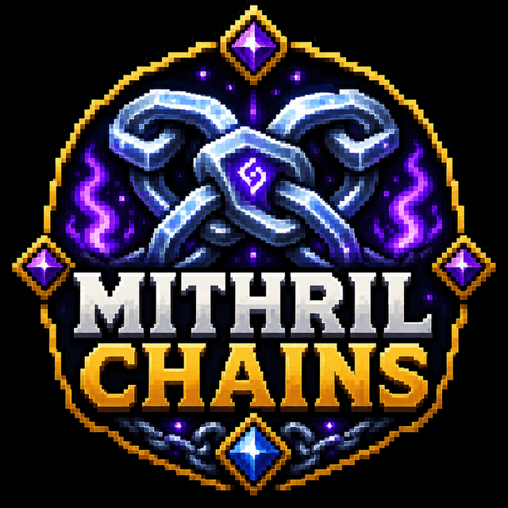

✓
Craftable chainmail armour
Provides recipes for the complete vanilla chainmail set.

Make chainmail armour craftable again.
Full overview
MithrilChains restores a direct survival crafting route for chainmail armour. It is a deliberately small plugin for servers that like chainmail as a progression tier but do not want it restricted to rare mob drops or trading.
The recipe-focused design means players understand the feature immediately and administrators do not need to maintain a larger custom-item system.
How it works
The plugin registers chainmail recipes using the intended survival materials. Players craft the armour through an ordinary crafting table and receive standard chainmail equipment.
Because the output remains familiar vanilla gear, the resource can slot into most survival economies without introducing new combat mechanics.
Administration
The main balancing decision is the recipe cost. Test the value against iron equipment, villager access and any custom armour systems before publishing it to players.
Feature breakdown
Each headline feature is expanded below so visitors can understand the real server use rather than seeing a short tag list.
Provides recipes for the complete vanilla chainmail set.
Adds a clear route between early and stronger armour tiers.
No menus, databases or background tasks are required.
Recipes can be balanced around obtainable world resources.
The plugin does not need persistent player data.
Install, verify recipes and begin using the resource.
Getting started
The platform buttons include downloads, changelogs and the original public resource discussion.
Test the legacy JAR on the target version.
Review the chainmail recipes and economy value.
Check for recipe conflicts with other plugins.
Publish the recipes to players if they are not discoverable automatically.
Community feedback
Live ratings and recent written reviews from the public Spigot resource page.
Review data is loaded through Spiget. Static rating fallbacks remain visible if the service is unavailable.
Related projects